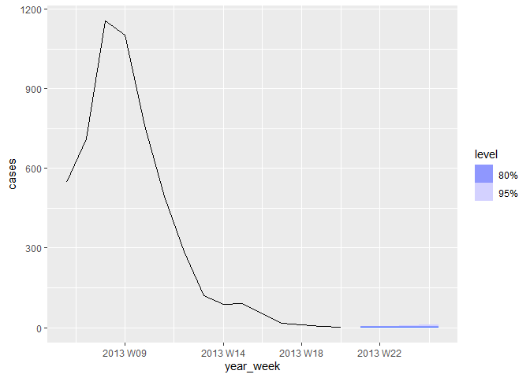

The fableCount R package aims to offer counting time series models for users of the fable framework. These models work within the fable framework, which provides the tools to evaluate, visualize, and combine models in a workflow consistent with the tidyverse.
Installation
You can install the stable version from CRAN:
install.packages("fableCount")You can install the development version from GitHub
# requires("devtools")
remotes::install_github("Gustavo039/fableCount")Count Time Series
A count time series is a sequence of observations that record the number of events occurring at discrete time intervals. These events can be anything that can be counted, such as the number of daily sales, the number of calls received per hour, or the number of cases of a disease per week.
INGARCH and GLARMA usage
The package has 2 main functions.
INGARCH - (Integer Generalized Autoregressive Conditional Heteroskedasticity)
GLARMA - (Generalized Linear Autoregressive Moving Averages)
The usage of the model functions follows the fable and fabletools pattern
dataset |>
fabletools::model(
model_name1 = INGARCH(response_variable ~ pq(AR_oder, MA_order)),
model_name2 = GLARMA(response_variable ~ pq(AR_oder, MA_order))
)If the pq() is ommited, the automatic parameter selection algorithm is triggered. Such algorithms are based on searching for the model that presents the lowest AIC or BIC
Example - Influeza in Germany
The following dataset was taken from the tscount package and gives the weekly number of reported influenza cases in the state of North Rhine-Westphalia (Germany) from January 2001 to May 2013.
(The cleaned tsibble object can be obtained via fableCount::influenza_rhine)
influenza_rhine |>
autoplot() +
labs(title = "Influenza Cases in Rhine-Westphalia, Germany",
y="Number of Cases") +
theme_minimal()
For models estimation, the automatic parameter selection method was used
model_influenza = influenza_rhine |>
model(ing = INGARCH(cases),
gla = GLARMA(cases, method = 'NR'))The estimated models were:
- INGARCH
model_influenza |>
select(ing) |>
report()
#> Series: cases
#> Model: INGARCH(2, 0)
#>
#> poisson INGARCH(2, 0) w/ identity link
#> # A tibble: 2 × 4
#> statistic `(Intercept)` beta_1 beta_2
#> <chr> <dbl> <dbl> <dbl>
#> 1 Estimate 0.202 0.986 1.04e-10
#> 2 Std.Error 0.0245 0.00864 7.29e- 3
#>
#> log likelihood=-10521.42
#> AIC=21048.83
#> BIC=21062.24
#> QIC=21049.86- GLARMA
model_influenza |>
select(gla) |>
report()
#> Series: cases
#> Model: GLARMA(1, 0)
#>
#> Poisson GLARMA(1, 0)
#> # A tibble: 2 × 3
#> statistic intercept ar_1
#> <chr> <dbl> <dbl>
#> 1 estimate 3.92 0.0154
#> 2 std_error 0.00608 0.0000291
#>
#> log likelihood=-59377
#> AIC=118758With the models already estimated, it is possible to draw a prediction interval
- INGARCH forecast
model_influenza |>
dplyr::select(ing) |>
forecast(h = 5) |>
autoplot(influenza_rhine |>
dplyr::filter(year_week > tsibble::make_yearweek(2013, 5) )
)
- GLARMA forecast
model_influenza |>
dplyr::select(gla) |>
forecast(h = 5) |>
autoplot(influenza_rhine |>
dplyr::filter(year_week > tsibble::make_yearweek(2013, 5) )
)
Learning to forecast with fable
- The forecasting principles and practices online textbook provides an introduction to time series forecasting using fable: https://otexts.com/fpp3/